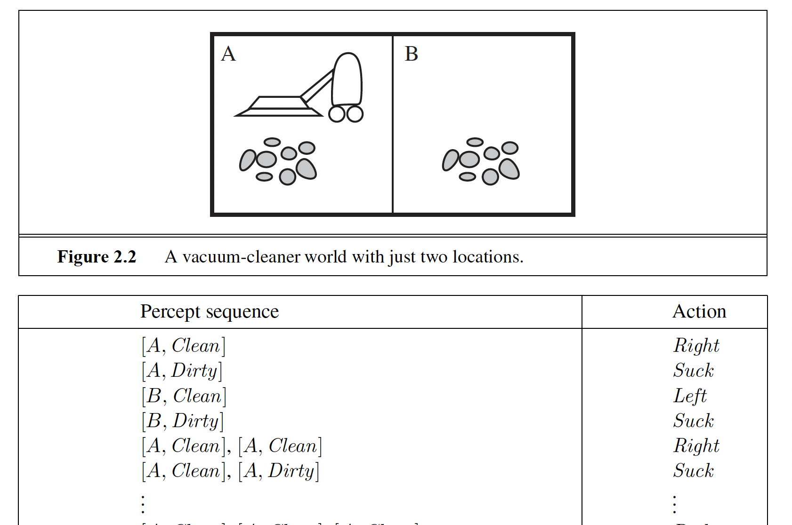
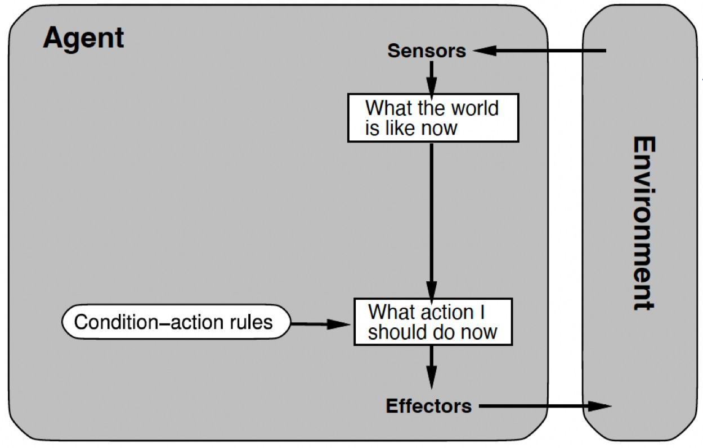
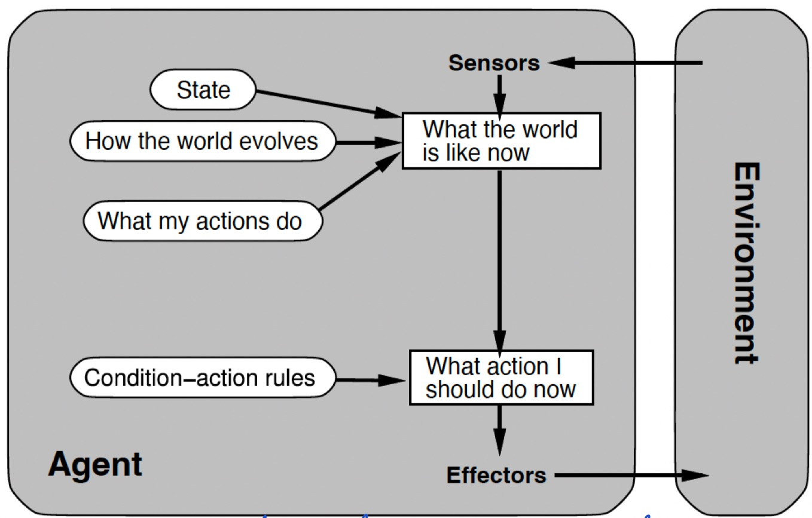
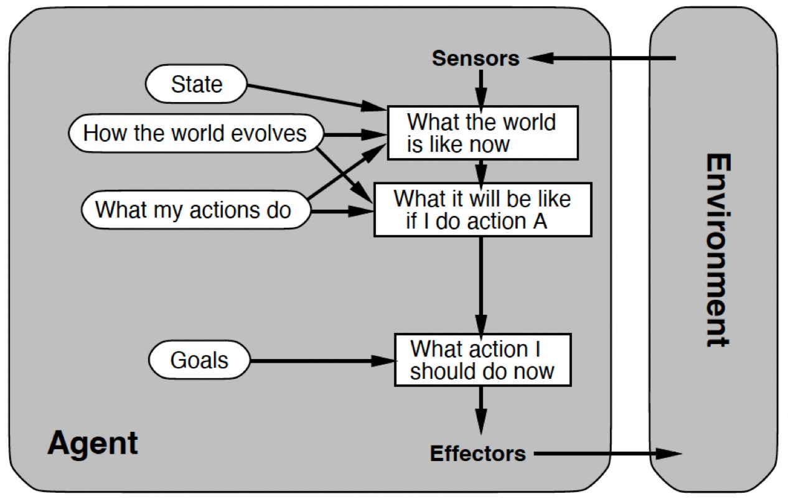
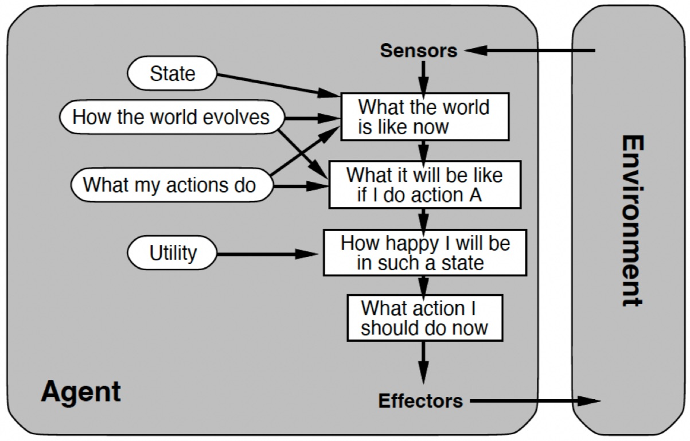

Agents, environments, and the vocabulary we'll use for the rest of the course.
Module 3 · Based on Russell & Norvig, AIMA Chapter 2
Beginner Agents ~30 minPrerequisites: Modules 1–2 (What is AI? and History & Foundations).
An agent is anything that perceives its environment through sensors and acts upon that environment through effectors (also called actuators). That's it — the definition is deliberately broad: it covers you, a thermostat, a Mars rover, and a chess program equally well.

A useful way to remember the split: agent = architecture + program. The architecture is the physical machinery (the body, the robot, the computer with its sensors and actuators); the agent program is the software that maps what comes in to what goes out.
| Agent | Sensors (perceives with…) | Effectors (acts with…) |
|---|---|---|
| Human agent | Eyes, ears, and other organs | Hands, legs, mouth/voice |
| Robotic agent | Cameras, infrared range finders | Motors, grippers, wheels |
| Software agent | Keystrokes, file contents, network packets | Screen output, writing files, sending packets |
Look at the diagram again: the interesting part is the ? between the sensors and the effectors. That box is the agent program — the thing that decides which action to take, given what has been perceived. The rest of this course is essentially about filling in that box with progressively smarter machinery: search, logic, probability, and learning.
Two more terms you'll see constantly. The percept sequence is the complete history of everything the agent has ever perceived — in principle, an agent's choice of action can depend on all of it. And a rational agent is one that does the right thing with that history: for each possible percept sequence, a rational agent selects an action that is expected to maximize its performance measure, given the evidence provided by the percept sequence and whatever built-in knowledge the agent has. Note the word expected — rationality is not omniscience. A rational agent can still get unlucky; it just can't be careless.
Before you design an agent, you must pin down the task environment it will operate in. The standard checklist is PEAS:
Writing the PEAS description first forces you to be honest about what the agent actually needs. Here are four classic examples:
| Agent | Performance measure | Environment | Actuators | Sensors |
|---|---|---|---|---|
| Automated taxi driver | Safe, fast, legal, comfortable trip; maximize profit | Roads, other traffic, pedestrians, customers, weather | Steering, accelerator, brake, signals, horn, display | Cameras, sonar, speedometer, GPS, odometer, engine sensors, keyboard |
| Medical diagnosis system | Healthy patient, minimized costs, no lawsuits | Patient, hospital, staff | Screen display of questions, tests, diagnoses, treatments, referrals | Keyboard entry of symptoms, findings, patient's answers |
| Chess program | Win the game (within the time limit) | Chessboard, opponent, chess clock | Moves shown on screen (or a robotic arm moving pieces) | Board state / opponent's moves as input |
| Vacuum-cleaner robot | Amount of dirt cleaned, time taken, electricity used, noise made | Rooms, floors, carpets, furniture, dirt | Wheels/motors, suction, brushes | Bump sensors, dirt sensors, cliff sensors, camera |
The performance measure should reward what you actually want in the environment, not how you think the agent should behave. Reward a vacuum robot per unit of dirt sucked up, and a rational agent will learn to dump the dirt back out and suck it up again. Reward a clean floor instead.
Task environments vary enormously, but they can be classified along six dimensions. These dimensions largely determine how hard the problem is — and which agent design is appropriate.
In a fully observable environment, the agent's sensors give it access to the complete state of the environment at each point in time — nothing relevant is hidden. Chess is fully observable: the whole board is right there. Poker is partially observable (you can't see your opponents' cards), and so is taxi driving (you can't see what's around the corner or inside other drivers' heads). At the extreme, an environment with no sensors at all is non-observable; planning in a sensorless world leads to so-called conformant problems, where the agent must find a plan that works no matter what the actual state is.
An environment is deterministic if the next state is completely determined by the current state and the agent's action — no uncertainty, no surprises. Classic deterministic tasks: checking whether a string is a palindrome, computing a square root, converting Celsius to Fahrenheit, or finding the shortest path between two points — the same input always yields the same result. An environment is stochastic when outcomes involve chance or unmodeled factors: in taxi driving, the same steering action can lead to different outcomes depending on tires, weather, and other drivers.
In an episodic environment, experience is divided into independent episodes: the agent perceives, acts, and the episode is over — the next episode does not depend on the actions taken before. Think of a support bot answering unrelated questions one at a time: each answer stands alone. In a sequential environment, the current action changes future states — playing tennis or chess, where every shot or move shapes everything that follows. Sequential environments force the agent to think ahead; episodic ones don't.
A static environment does not change while the agent is deliberating — a vacuum robot cleaning a room that stays put can pause and "think" as long as it likes. A dynamic environment keeps changing while the agent thinks: in taxi driving, the world moves on whether or not you've decided what to do, so doing nothing is itself a decision.
This applies to states, time, percepts, and actions. Chess is discrete: a finite number of board states and legal moves. Taxi driving is continuous: speeds, positions, and steering angles vary smoothly over continuous time.
Is the agent alone, or are there others whose behavior matters? Solving a crossword is single-agent. Chess is competitive multi-agent; taxi driving is partly cooperative (avoiding collisions) and partly competitive (grabbing that parking spot) multi-agent.
Putting it all together for four familiar tasks:
| Task | Observable | Deterministic | Episodic | Static | Discrete | Agents |
|---|---|---|---|---|---|---|
| Crossword puzzle | Fully | Deterministic | Sequential | Static | Discrete | Single |
| Chess with a clock | Fully | Deterministic | Sequential | Semi-static (the clock runs) | Discrete | Multi |
| Taxi driving | Partially | Stochastic | Sequential | Dynamic | Continuous | Multi |
| 8-puzzle | Fully | Deterministic | Sequential | Static | Discrete | Single |
The hardest combination is partially observable, stochastic, sequential, dynamic, continuous, and multi-agent. That combination has a name: the real world. Taxi driving hits every one of those boxes — which is why it took decades longer than chess.
Agent programs come in five basic flavors, ordered from simplest to most capable. Each one adds machinery to cope with a harder class of environment.
The agent picks its action based only on the current percept, using condition–action rules: if car-in-front-is-braking then start-braking. Fast and simple — but blind. Simple reflex agents work only when the correct decision can be made from the current percept alone, which effectively means they fail outside fully observable environments. With no memory, they also loop forever in worlds that look the same from different states.

The fix for partial observability: keep an internal state that tracks the parts of the world you can't currently see. Maintaining it requires two kinds of knowledge encoded in the agent's model: how the world evolves independently of the agent, and what my own actions do to the world. Even something as human as glancing in the mirror and deciding "shall I say hello?" is a reflex agent with internal state at work — the current percept (a familiar face) is combined with remembered state (do I know this person? did I already greet them?) before a rule fires.

Knowing the current state isn't always enough — at a road junction, the right turn depends on where you're trying to go. Goal-based agents combine the world model with an explicit goal, and choose actions by asking "what will happen if I do this, and will it get me closer to the goal?" This is where search and planning enter the picture — the subject of the next several modules. Goals also make behavior flexible: change the destination and the same agent computes a new route, whereas a reflex agent would need all its rules rewritten.

Goals are binary — achieved or not — but many routes reach the destination, and some are quicker, safer, or cheaper than others. A utility function maps states onto a real number expressing how desirable they are, letting the agent trade off conflicting goals (speed vs. safety) and weigh likelihood of success against importance under uncertainty. Utility-based agents choose the action that maximizes expected utility.

All the previous types have to be told (or programmed with) everything they know. A learning agent improves itself: a learning element observes and rates the performance element's behavior (the performance element is the "whole agent" from before — the part that picks actions) and proposes improvements, guided by feedback from a critic and pushed to explore by a problem generator. Learning agents are the only type that can come to function well in initially unknown environments, becoming more competent than their initial knowledge alone would allow.
| Agent type | Decides using | Limitation |
|---|---|---|
| Simple reflex | Current percept + condition–action rules | Fails when the world isn't fully observable; no memory, no foresight |
| Model-based reflex | Current percept + internal state + world model | Still purely reactive — can track the world but has no notion of where it wants to go |
| Goal-based | World model + explicit goals + search/planning | Goals are all-or-nothing; can't compare "good" routes with "better" ones |
| Utility-based | World model + utility function (expected utility) | Needs an accurate model and utility function supplied up front |
| Learning | Any of the above + a learning element that critiques and improves it | Needs feedback, exploration, and time to learn |
Put the pieces together and you get the field's north star: an intelligent agent that combines seeing, hearing, speaking, and robotics (perception and action) with deduction, planning, learning, and explanation (reasoning). Every module from here on builds one of those pieces.
Three short problems to make the vocabulary stick. Attempt each one on paper before opening the solution.
Write a full PEAS description for an autonomous drone that delivers pizzas across a city. Be specific — vague answers like "environment: outside" don't count.
| Component | Sample answer |
|---|---|
| Performance measure | Pizza delivered hot and undamaged, delivery time, battery/energy used, no collisions or airspace violations, customer satisfaction, deliveries per hour |
| Environment | City airspace, buildings, weather (wind, rain), birds, other drones, no-fly zones, landing spots, customers |
| Actuators | Rotors (thrust, pitch, roll, yaw), package release mechanism, status lights, speaker/notification signal |
| Sensors | GPS, altimeter, cameras, accelerometer/gyroscope, wind sensor, battery gauge, obstacle-detection lidar/sonar, package-weight sensor |
Any reasonable variation is fine — the key is that each entry is concrete and each sensor/actuator actually supports the performance measure.
Classify (a) a game on an online chess site and (b) a Mars rover mission along all six dimensions: observable, deterministic, episodic, static, discrete, single/multi-agent. Justify each call in a few words.
| Dimension | Online chess game | Mars rover |
|---|---|---|
| Observable | Fully — the whole board is visible | Partially — cameras see only part of the terrain; subsurface unknown |
| Deterministic | Deterministic — moves have certain outcomes (barring disconnects) | Stochastic — wheel slip, dust, terrain surprises |
| Episodic | Sequential — every move shapes the rest of the game | Sequential — today's route and power use constrain tomorrow |
| Static | Semi-static — board changes only on moves, but the clock keeps running | Dynamic — lighting, temperature, and dust change while the rover deliberates |
| Discrete | Discrete — finite board states and moves | Continuous — position, wheel angles, power levels |
| Agents | Multi — a competing opponent | Essentially single — no other agents whose behavior it must model |
Which agent type is minimally required (i.e. the simplest that suffices) for: (a) a thermostat, (b) a GPS navigator, (c) a self-improving spam filter?
An agent perceives through sensors and acts through effectors; a rational agent picks the action expected to maximize its performance measure for each percept sequence. You can specify any task with PEAS, classify its environment along the six dimensions, and match it to the right member of the five agent types — from simple reflex rules to full learning agents. This vocabulary is the backbone of everything that follows.
Next up: Module 4 — Problem Solving by Search: goal-based agents that plan ahead.